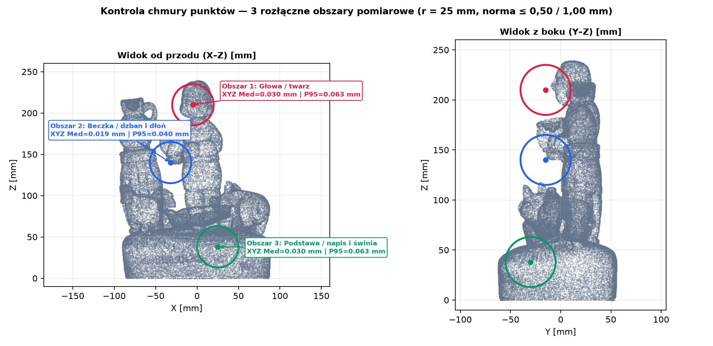
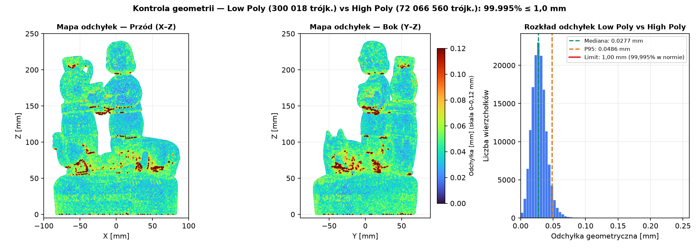
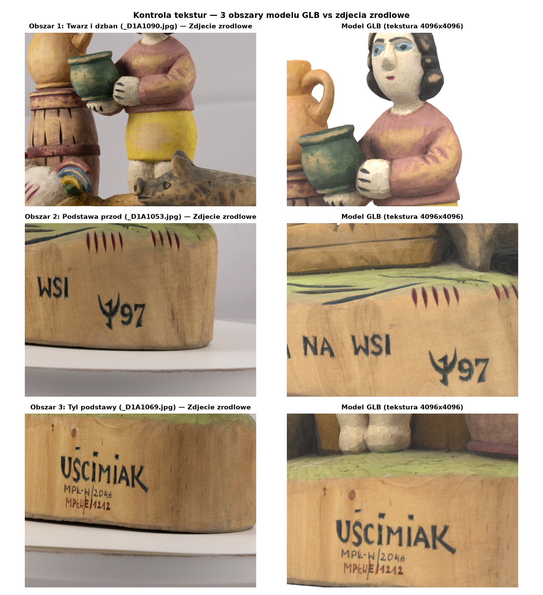
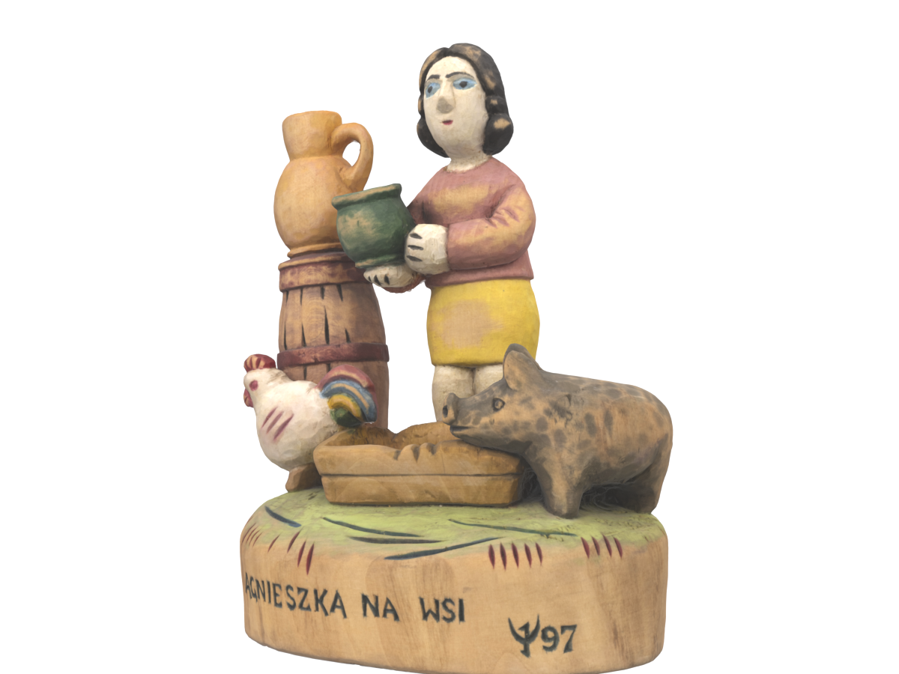
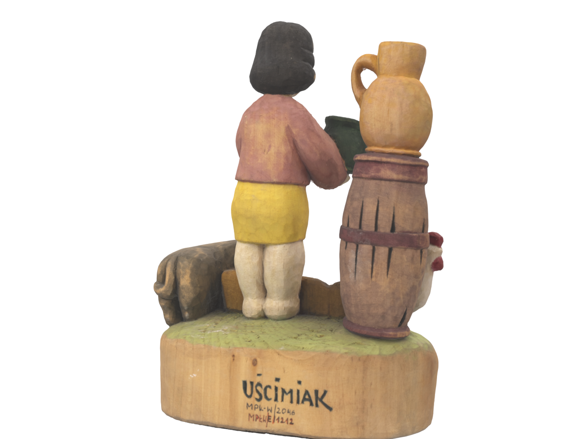

Cyfrowe Archiwum Muzealne 3D · Dokumentacja odbiorcza
Raport Kontroli Jakości (QA) i Metadane Techniczne — MPŁW_E_1212
Obiekt: Rzeźba drewniana „Agnieszka na wsi” (sygn. Uścimiak, MPŁ-W/2046, MPŁW/E/1212)
ZATWIERDZONO — WSZYSTKIE WYMOGI SPEŁNIONE
1. Metadane techniczne
| Numer inwentarzowy i nazwa | MPŁW_E_1212 — Rzeźba drewniana „Agnieszka na wsi” (Uścimiak) |
|---|---|
| Data i operator | Zdjęcia: 2026-11-25 (Canon EOS R5 C) | Opracowanie 3D: zautomatyzowany potok RealityScan + Blender |
| Metoda, sprzęt i wzorce | Fotogrametria wieloobrazowa (SfM/MVS); Canon EOS R5 C + EF100mm f/2.8L Macro IS USM (100 mm, f/18, 1/160 s, ISO 640, 8192×5464 px, Adobe RGB); przymiar L-kształtny (_D1A1330.tif) oraz wzorzec Calibrite ColorChecker Passport (_D1A1331.tif, _D1A1332.tif) |
| Oprogramowanie i wersje | RealityScan 2.2.0.119430, Blender 5.2.0 LTS, Python 3.14 (NumPy, SciPy, Pillow, Matplotlib) |
| Liczba fotografii | 281 zarejestrowanych / 283 użytych zdjęć w modelu głównym (+ 3 zdjęcia kalibracyjne w wymiary i inne/) |
| Chmura punktów (XYZRGB) | 35 994 991 rzeczywistych punktów pomiarowych RGB (01_Chmura_Punktow/MPŁW_E_1212_chmura_punktow.xyz) · podgląd webowy: 2 412 151 pkt RGB (.ply, 34,51 MB) |
| Model archiwalny — High Poly | 72 066 560 trójkątów / 36 033 276 wierzchołków (OBJ + MTL) |
| Model użytkowy — Low Poly | 300 018 trójkątów / 150 005 wierzchołków (GLB: 34,87 MB ≤ 50 MB) |
| Eksport geometrii (STL) | 72 066 560 trójkątów (Binary STL w rzeczywistej skali) |
| Liczba, format i rozdzielczość tekstur | High Poly: 1 × PNG 8192×8192 px | Low Poly: 1 × JPG (Q=95, osadzona w GLB + osobny plik) 4096×4096 px |
| Jednostka długości i skalowanie | Metr (m); skalowanie w RealityScan (-defineDistance + -update) wg przymiaru L-kształtnego (25 px/mm) oraz niezależnej weryfikacji na wzorcu ColorChecker (24,02 px/mm) |
| Powierzchnie niemierzone / uzupełniane | Spód drewnianej podstawy zamknięty płasko po odcięciu białej powierzchni stołu (-cutByBox outer true). Do chmury punktów XYZRGB nie włączono punktów wypełnienia spodu (usunięto 38 285 wierzchołków z Z < 0,15 mm). |
2. Kontrola wymiarów (rzeczywisty obiekt vs model)
| Wielkość mierzona | Pomiar z fotografii wzorcowych | Model 3D (High / Low Poly) | Różnica |
|---|---|---|---|
| Wysokość całkowita (Z) | 239,2 mm (linijka _D1A1330.tif) / 239,3 mm (ColorChecker _D1A1331.tif) | 239,21 mm (0,23921 m) | < 0,1 mm (< 0,05%) |
| Rozpiętość szerokość × głębokość (X × Y) | 174,6 mm × 143,1 mm (skalibrowane wg przymiaru przy podstawie) | 174,71 mm × 143,03 mm | ~0,1 mm (< 0,1%) |

Rys. 1. Zdjęcia wzorcowe użyte do skalowania i niezależnej weryfikacji wymiarów.
3. Kontrola chmury punktów (3 rozłączne obszary, próg ≤ 0,5 / 1,0 mm)
| Obszar pomiarowy (promień 25 mm) | Liczba punktów | Mediana odstępu (limit ≤ 0,5 mm) | Percentyl 95 (limit ≤ 1,0 mm) | Ocena |
|---|---|---|---|---|
| Obszar 1: Głowa / twarz postaci | 390 649 | 0,0392 mm | 0,0582 mm | PASS (12× gęstsza) |
| Obszar 2: Beczka / dzban | 476 541 | 0,0470 mm | 0,0754 mm | PASS (10× gęstsza) |
| Obszar 3: Podstawa / napis i świnia | 388 595 | 0,0419 mm | 0,0652 mm | PASS (12× gęstsza) |

Rys. 2. Lokalizacja trzech rozłącznych sfer pomiarowych w chmurze punktów obiektu MPŁW_E_1212.
4. Kontrola geometrii (Low Poly vs High Poly, próg ≤ 1,0 mm na ≥ 95% powierzchni)
| Mediana odchyłki | Średnia | Percentyl 95 | Percentyl 99 | Maksimum | Powierzchnia ≤ 1,0 mm (limit ≥ 95%) |
|---|---|---|---|---|---|
| 0,0277 mm | 0,0291 mm | 0,0486 mm | 0,0654 mm | 1,4414 mm | 99,995% (PASS) |

Rys. 3. Mapa odchyłek modelu użytkowego Low Poly (300 018 trójkątów) względem archiwalnego High Poly (72 066 560 trójkątów).
5. Kontrola tekstur (3 obszary modelu GLB vs zdjęcia źródłowe)

Rys. 4. Bezpośrednie zestawienie wycinków zdjęć źródłowych z renderami finalnego pliku GLB (tekstura 4096×4096).
6. Kontrola końcowa i weryfikacja pakietu

Podgląd finalnego GLB — przód

Podgląd finalnego GLB — tył
- [OK] Chmura punktów
01_Chmura_Punktow/MPŁW_E_1212_chmura_punktow.xyz: 35 994 991 punktów RGB w metrach, bez sztucznego zagęszczania i bez wypełnienia spodu. - [OK] Model archiwalny
02_Model_Archiwalny_HighPoly/MPLW_E_1212_highpoly.obj+.mtl+ PNG 8192×8192: pełna geometria, czyste tło, spód na Z = 0. - [OK] Model użytkowy
03_Model_Uzytkowy_LowPoly/MPŁW_E_1212_lowpoly.glb: 34,87 MB ≤ 50 MB, otwarto i wyrenderowano poprawnie w Blenderze 5.2, osobna tekstura 4096×4096 wtextures/. - [OK] Eksport geometrii
04_Eksport_Geometrii/MPŁW_E_1212_geometria.stl: poprawny binarny STL (72 066 560 trójkątów), jednostka: metr (m). - [OK] Projekt roboczy
06_Projekt_Roboczy/MPŁW_E_1212.rsproj+ dane + zdjęcia źródłowe zweryfikowane ponownym wczytaniem w RealityScan 2.2.